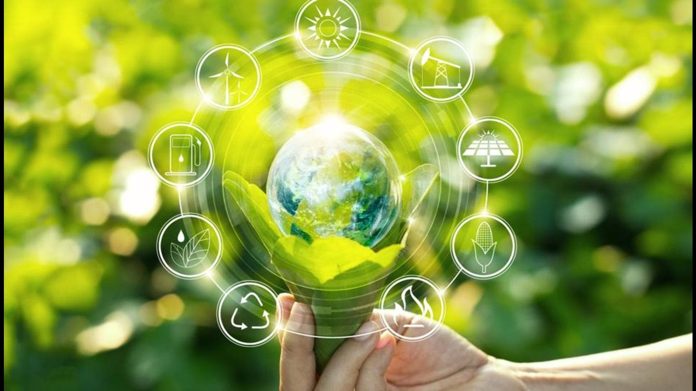

Green Energy
Green energy comes from natural sources such as sunlight, wind, rain, tides, plants, algae and geothermal heat. These energy resources are renewable, meaning they're naturally replenished. The different types of renewable energy technologies include: Solar energy, Marine energy, Wind energy, Hydropower, Bio-energy, Geothermal energy etc.
There are various renewable energy technologies, which include hybrid and related technologies. These are effectively used for:
- Storing energy generated through renewable energy
- For predicting renewable energy supply
- Assisting in efficient delivery of energy generated by means of renewable energy technologies to energy consumers
NEED OF GREEN ENERGY
Green energy is produced from renewable sources and produces very less impact on our environment. So, in order to protect Mother Nature from pollution and to ensure the supply of energy continuously we should start using green energy for industrial as well as domestic purpose.To limiting global warming and protecting ecosystems by reducing CO2 emissions through energy efficiency and renewable Energy, Green Energy Technology is essential.
As temperatures rise, agricultural output will fall, damage from floods and storms will increase, (tropical) diseases will become more prevalent and access to water will become more of a problem for more and more people. The cost to our environment is greater and loss is irreversible. The Earth’s flora and fauna will suffer both directly from higher temperatures and indirectly through the damage to their habitats. Ecosystems will disappear. Even small temperature increases will cause coral bleaching and threaten some amphibians. Temperature rises of 3° or 4°C and more will lead to major extinctions around the globe.
USES OF GREEN ENERGY
- There are many options of using renewable energy at residential or commercial spaces.
- Most common form of renewable energy comes from sunlight or solar energy. One can get solar panels installed in residential and commercial spaces where sunlight is available in plenty.
- Other places where wind is in abundance may raise wind turbines to generate renewable energy. The energy thus gotten can be used for pumping water and or for charging sailboat battery.
- Biomass is another very popular renewable energy source. It is used for producing electricity and also used as a transportation fuel. The use of biomass as a renewable form of energy is commonly known as bio-energy.
- Geothermal energy on the other hand, taps the internal heat of the Earth for a variety of uses, including cooling and heating of buildings and electric power production.
- Marine energy is yet another very important renewable form of energy. It comes from a variety of sources including tidal energy and energy generated from the ocean’s waves, driven from both tides and winds.

Quote of the day
"Conserve Energy For Preserve Future"